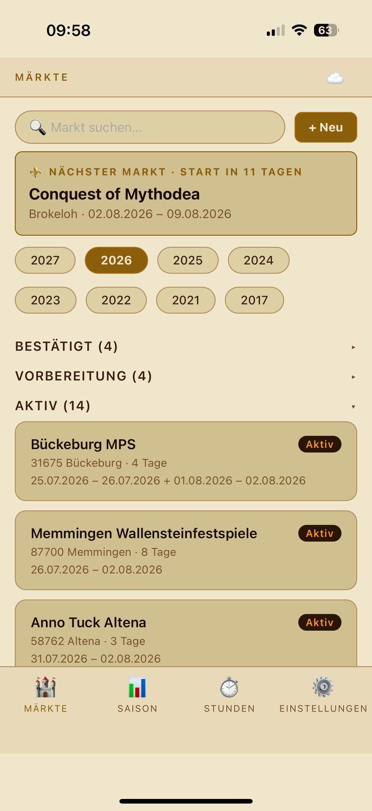
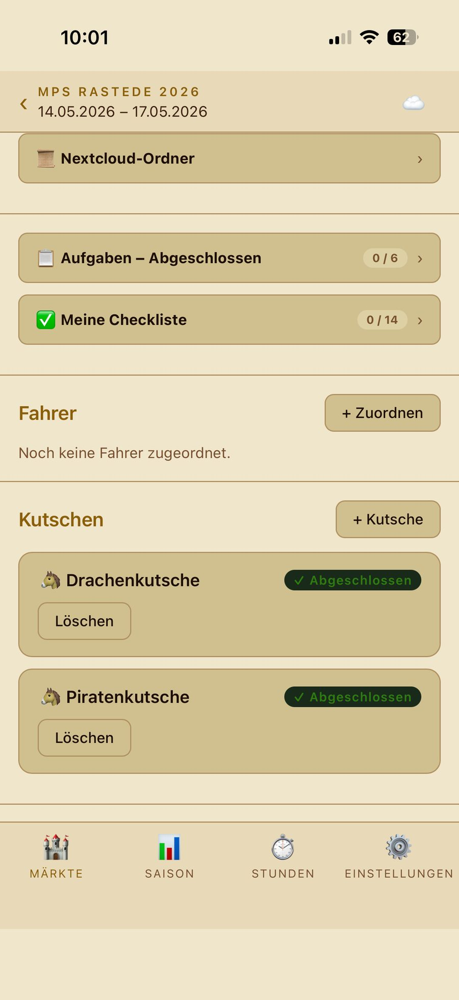
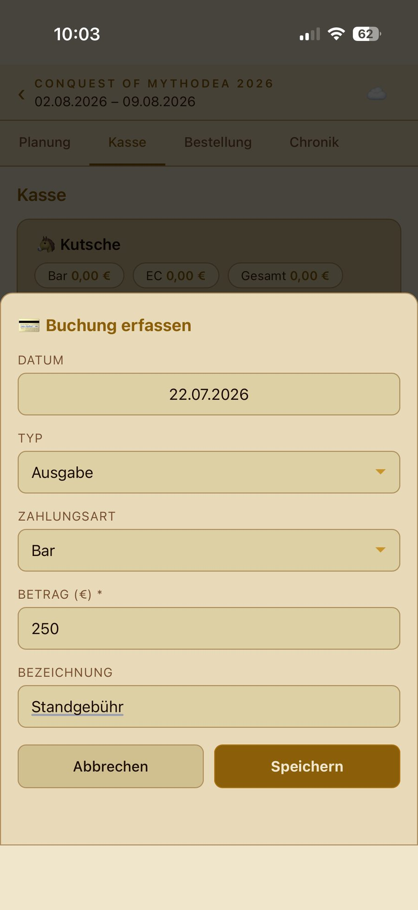
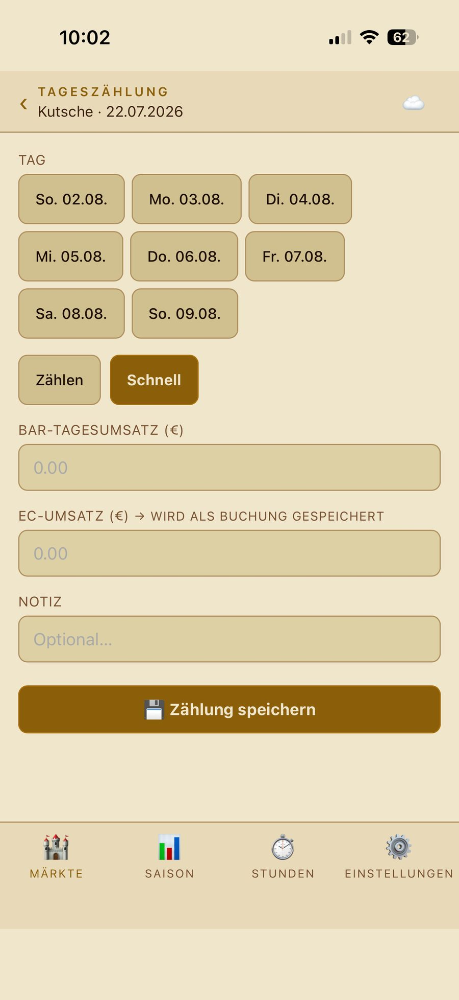
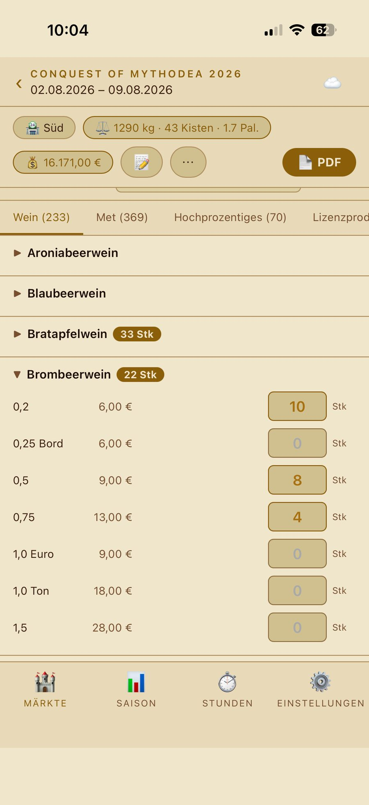
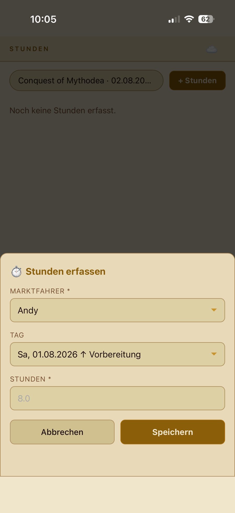
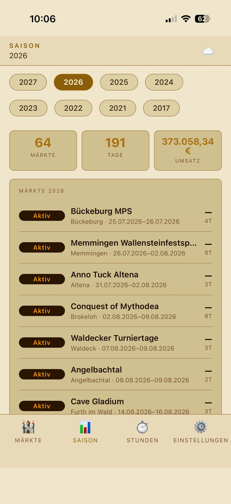
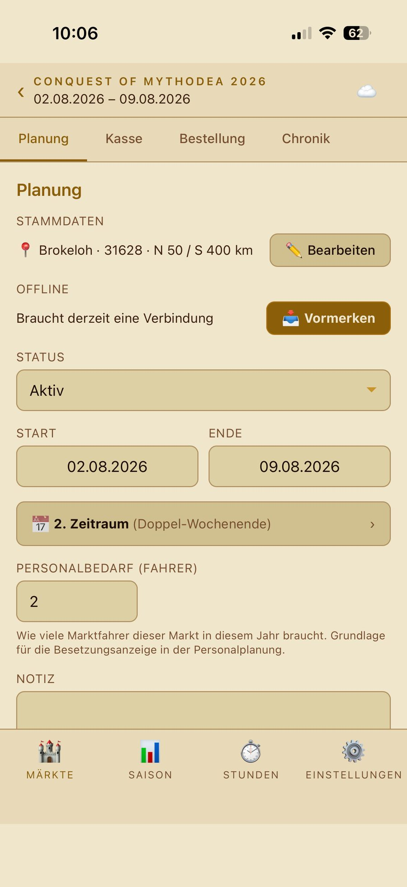

Was ist die Marktfahrer-App? Das Werkzeug für den Marktalltag bei Beerenweine: Märkte planen, an der Kutsche die Kasse abrechnen, Bestellungen aufgeben, Arbeitsstunden festhalten – alles an einem Ort, auch ohne Empfang. Diese Anleitung führt dich durch alle Funktionen. Nutze die Suche oben oder das Inhaltsverzeichnis.
01 Was hinter der App steckt
Die App bildet ab, wie Beerenweine wirklich arbeitet. Wenn du dieses Grundgerüst einmal verstanden hast, erklärt sich der Rest fast von selbst.
Die Kette: vom Veranstalter bis zur Kasse
- Veranstalter – wer den Markt ausrichtet.
- Markt (Vorlage) – die Stammdaten eines Marktes: Name, Ort, Entfernung zum Lager. Ändert sich über die Jahre kaum.
- Saison – derselbe Markt in einem bestimmten Jahr, mit eigenem Datum, eigener Dauer und eigenem Status.
- Kutsche – der Verkaufsstand vor Ort. Ein Markt kann eine oder mehrere Kutschen haben.
- Kassenzählung – pro Kutsche und Tag eine Abrechnung.
Beerenweine verkauft aus selbstgebauten Kutschen. Was in der Technik „Stand" heißt, nennen wir in der App durchgehend Kutsche – so, wie ihr auf dem Markt auch sprecht.
Zwei Grundregeln, die alles sicher machen
- Nichts wird je hart gelöscht. Gelöschtes wird nur als gelöscht markiert – nichts geht versehentlich endgültig verloren.
- Supabase ist die Wahrheit. Deine Eingaben landen zentral in der Datenbank. Das Gerät hält nur eine Kopie für unterwegs.
02 Anmelden & erste Orientierung
Du meldest dich mit E-Mail und Passwort an. Deine Zugangsdaten bekommst du von Andy. Nach dem ersten Login bleibt die Sitzung erhalten – du musst dich nicht bei jedem Start neu anmelden.

Unten findest du vier Bereiche: Märkte, Saison, Stunden und Einstellungen. Über die Einstellungen wählst du auch dein Theme – fünf Erscheinungsbilder von Pergament bis LCARS. Diese Anleitung übernimmt automatisch dein gewähltes Theme.
Leg die App als Lesezeichen auf deinen Home-Bildschirm (Safari → Teilen → „Zum Home-Bildschirm"). Dann startet sie wie eine echte App im Vollbild.
03 Der Märkte-Tab
Hier beginnt alles. Ganz oben zeigt die Karte „Nächster Markt" deinen kommenden Einsatz samt Countdown („Start in 11 Tagen"). Darunter wählst du das Saison-Jahr, und die Märkte sind nach Lebensphase gruppiert:
- Bestätigt – zugesagt, aber noch nicht in Vorbereitung.
- Vorbereitung – Bestellung, Planung, Personal laufen.
- Aktiv – der Markt läuft gerade oder steht unmittelbar an.
Jede Phase lässt sich auf- und zuklappen. Über + Neu legst du einen neuen Markt an.

Ganz oben siehst du Anstehende Aufgaben – kritische Punkte wie eine offene Bestellung, farblich hervorgehoben. Über den Stern markierst du Favoriten. Ist gerade ein Markt aktiv, springt dir dessen Karte zuerst ins Auge.
Über die Suche findest du jeden Markt per Name. Ein Tipp auf Öffnen bringt dich in den Markt hinein.
04 Einen Markt öffnen – die Kutschen
Ein geöffneter Markt hat vier Reiter oben: Planung, Kasse, Bestellung und Chronik. Unter Planung stehen Stammdaten, Status, Zeitraum, Personalbedarf und die Kutschen.
Bei zwei Kutschen tragen sie feste Namen: Piratenkutsche und Drachenkutsche – das sind einfach zwei Bezeichnungen zur Unterscheidung, keine Rangfolge. Über + Kutsche legst du weitere an; jede zeigt ihren Abschluss-Status.

Pro Kutsche erledigst du deine Tagesarbeit: Kasse zählen, EC-Einnahmen und Ausgaben buchen. Jede Kutsche wird getrennt abgerechnet und am Marktende einzeln abgeschlossen.
05 Kasse zählen – Modus „Zählen"
Der genaue Weg: Du zählst das Geld in der Kasse Stück für Stück, die App rechnet den Tagesumsatz aus. Das ist der Modus für den sauberen Tagesabschluss.

Anfangsbestand 400,00 €, gezählt 940,00 € → Bar-Tagesumsatz 540,00 €. Die Stückelung bleibt gespeichert, auch wenn du den Kassenbericht erst Tage später schreibst.
Der Anfangsbestand gehört zur Zählung des Tages. Gib ihn sorgfältig ein – er ist die Grundlage für die ganze Abrechnung.
06 Kasse – Modus „Schnell"
Wenn es hektisch ist oder du den Umsatz schon kennst, geht es schneller: Im Modus Schnell trägst du den Bar-Tagesumsatz direkt ein – ohne einzeln zu zählen.

Zählen für den sauberen Abschluss mit Kassenkontrolle. Schnell für die rasche Erfassung zwischendurch. Beide führen zum selben Tagesumsatz.
07 EC & Buchungen erfassen
Nicht alles ist Bargeld. EC-Einnahmen und Barausgaben (z. B. Standgebühr) erfasst du getrennt als Buchungen.
- EC-Einnahme – fließt in den Markt-Umsatz ein, ist aber kein Bargeld in der Kasse.
- Barausgabe – mindert den Betrag, den du am Ende abgibst.

Jede Buchung erscheint in einer Liste je Kutsche. Ein Fehler ist kein Problem: Über das ✕ entfernst du eine Buchung wieder (sie wird nur als gelöscht markiert, nie hart entfernt).
08 Bestellungen aufgeben
Für jeden Markt bestellst du Ware aus einem der beiden Lager (Süd/Schöllkrippen oder Nord/Minden). Die erste Bestellung ist die Grundbestellung, jede weitere eine Nachbestellung.
Hat ein Markt mehrere Kutschen, bestellt jede ihre eigene Ware – sie laufen nicht gleich. Oben erscheint dann eine Leiste mit den Kutschen; darunter siehst du die Bestellungen der gewählten Kutsche. Ans Lager gehen getrennte PDFs, jedes mit Kutsche und Bestellart im Kopf.
Bei einem Markt mit nur einer Kutsche ändert sich nichts – keine Leiste, keine Auswahl.
Sobald die Bestellung beim Lager ist, tippst du „Als versendet markieren". Zwei Dinge passieren: Die Bestellung wird als verschickt gekennzeichnet, und bei der Grundbestellung wird die Aufgabe „Warenbestellung aufgegeben" in der Planung automatisch abgehakt – du musst sie nicht doppelt pflegen. Vertippt? „Rückgängig" nimmt die Markierung zurück; der Haken in der Planung bleibt stehen.
Willst du eine bereits versendete Bestellung ändern, fragt die App nach. Meistens ist eine Nachbestellung gemeint – die kannst du direkt aus der Rückfrage heraus anlegen. Sie startet leer: Du trägst nur ein, was zusätzlich kommt. Wer stattdessen die alte Bestellung überschreibt, ändert nichts mehr an der Ware, die schon unterwegs ist.
Legst du im Folgejahr eine Bestellung an, kannst du die des Vorjahres als Grundlage wählen. Dort sind Grund- und Nachbestellung bereits zusammengezählt: Wurden 48 Flaschen bestellt und 24 nachgeordert, stehen dort 72 – mit dem Hinweis „48 Grund + 24 Nach". So siehst du auf einen Blick, dass die erste Menge nicht gereicht hat. Auch die Marktnotizen werden je Kutsche fortgeschrieben.

Oben zeigt der goldene Merker laufend Kisten, Paletten und Gewicht deiner Bestellung. Eine Palette = 20 Kisten. Direkt daneben wählst du das Fahrzeug: Iveco Solo (bis 30 Kisten), mit Anhänger (bis 100) oder Spedition (unbegrenzt). Passt die Menge nicht ins gewählte Fahrzeug, werden Merker und Auswahl orange mit ⚠️ – dann größeres Fahrzeug wählen oder Menge reduzieren. Die Fahrzeugwahl wird je Bestellung gespeichert.
Bestellungen brauchen Empfang. Ohne Netz zeigt der Bestell-Bereich einen Fehler statt Daten – das ist bewusst so. Mach Bestellungen mit stabilem Netz, nicht im Funkloch.
09 Arbeitsstunden eintragen
Deine geleisteten Stunden trägst du pro Tag ein – in der Regel einem Markt zugeordnet. Diese Daten sind die Grundlage für die Stundennachweise.

Trag deine Stunden am besten täglich ein, solange du sie noch im Kopf hast. Nachträgliches Rekonstruieren kostet mehr Zeit als der tägliche Eintrag.
10 Der Saison-Tab – Zahlen & KPIs
Der Saison-Tab bündelt die Zahlen über alle Märkte eines Jahres: Umsätze, Kennzahlen und Verläufe. Hier siehst du auf einen Blick, wie die Saison läuft.

Der Markt-Umsatz setzt sich zusammen aus allen Bar-Tagesumsätzen plus den EC-Einnahmen – über alle Kutschen und Tage des Marktes.
11 Offline arbeiten & Synchronisation
Auf dem Markt hast du oft kein oder schlechtes Netz. Die App ist dafür gebaut: Das Marktkritische – Kasse zählen, EC/Buchungen, Stunden – funktioniert offline.
Vorher vormerken
Ein Cache füllt sich nur, wenn du Daten vorher geladen hast. Deshalb gibt es im Planungs-Bereich den Knopf 📥 Vormerken: Er lädt das komplette Marktpaket vorab aufs Gerät. Mach das zuhause bei gutem Netz, bevor du zum Markt fährst.

Das Sync-Badge
Oben im Kopf zeigt ein kleines Zeichen den Sync-Status. Hast du offline gearbeitet, sammeln sich deine Schreibvorgänge in einer Warteschlange und werden automatisch übertragen, sobald wieder Netz da ist. Eine Zahl am Badge zeigt, wie viele Einträge noch auf Übertragung warten.
Bei einem Balken meldet das iPhone „online", aber nichts geht durch. Die App erkennt das über ein hartes Zeitlimit und wechselt selbst in den Offline-Modus – du musst nichts tun.
Bestellungen und die Chronik brauchen Netz. Alles rund um die Kasse funktioniert offline – diese beiden nicht.
12 Rollen & Rechte
Nicht jede/r sieht und darf alles. Die App kennt fünf Rollen:
| Rolle | Darf |
|---|---|
| Admin | alles |
| Marktleiter | alles lesen & schreiben (außer Admin-Funktionen) |
| Marktfahrer | Bestellungen & Kassenzählungen – nur für die eigenen zugeordneten Kutschen |
| Lager | Bestellungen lesen, Bestellstatus ändern |
| Buchhaltung | nur lesen |
Deine Rolle steht in den Einstellungen. Siehst du weniger als erwartet, liegt es meist an der Rolle – das ist so gewollt, kein Fehler.
13 Häufige Fragen
Meine Daten sind weg / die Liste ist leer
Prüfe zuerst das Netz und den Sync-Status oben. Im Funkloch zeigt die App gecachte Daten; Bereiche ohne Offline-Fähigkeit (Bestellung, Chronik) bleiben leer, bis wieder Netz da ist.
Ich habe mich vertippt
Buchungen entfernst du über das ✕. Kassenzählungen überschreibst du, indem du sie neu speicherst – pro Kutsche und Tag gibt es genau eine Zählung.
Ich sehe einen Markt nicht
Sichtbarkeit hängt an deiner Zuteilung und Rolle. Wende dich an Andy, wenn dir ein Markt fehlt, den du brauchst.
Was mache ich vor der Abfahrt zum Markt?
Den Markt vormerken (📥) bei gutem Netz. Dann hast du unterwegs alles offline dabei.
Melde dich bei Andy. Diese Anleitung wird mit der App weiterentwickelt – sie wächst mit den Funktionen mit.
⚜ Marktfahrer · Beerenweine · Marktchronik
Mit Leidenschaft & Begeisterung